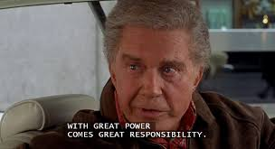

Uncle ben
Spider-Man
Sebagai seorang tukang listrik, ia bertindak sebagai figur ayah bagi Peter melalui masa kecilnya. Suatu malam Ben mengantar Peter ke perpustakaan dan berbicara dengan Peter tentang perubahan perilakunya. Kehilangan kesabaran saat Ben berpidato, Peter menyuruhnya berhenti berpura-pura seolah dia adalah ayahnya. Malamnya, Ben rupanya ditembak oleh seorang pembajak mobil yang komplotannya, Dennis Carradine, Peter menolak untuk berhenti ketika uangnya ditipu oleh pria yang dirampok Carradine.mempunyai quote populer yaitu:Remember, with great power comes great responsibility.